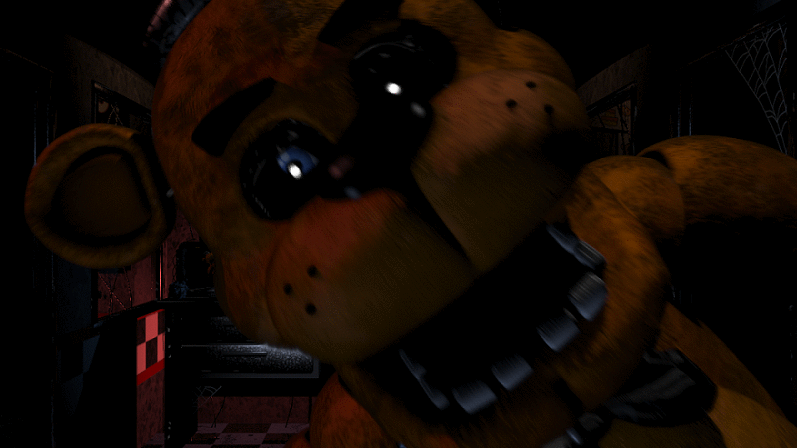
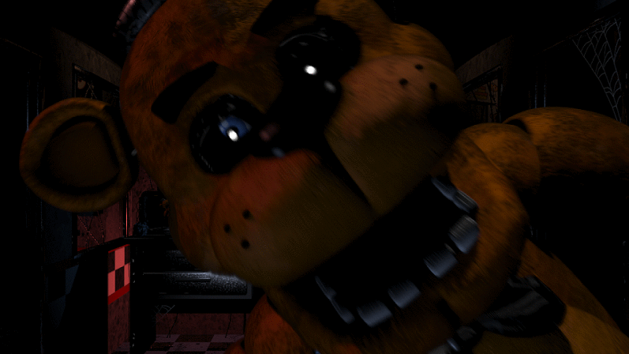

A little about Freddy
 

Freddy, also known as Freddy Fazbear is a brown animatronic bear and the star attraction of the original Freddy Fazbear's Pizza, as well as the face and namesake of the company that owns it– Fazbear Entertainment. Freddy takes the role of lead singer and overall performer of the band, standing in the center of the stage.